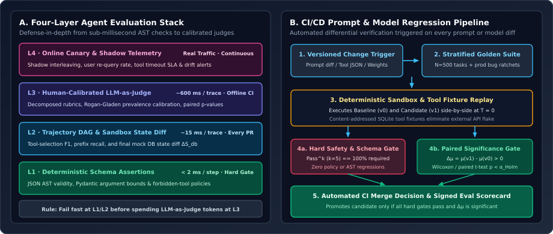
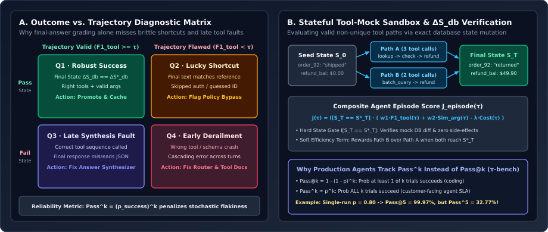

Designing an Agent Evaluation System from Scratch: Trajectory Benchmarks, Stateful Tool-Mock Sandboxes, $\text{Pass}^k$, and CI/CD Regression Suites
How to architect an end-to-end evaluation harness for multi-step tool-calling agents: curating stratified benchmark suites from production failures, isolating non-unique tool trajectories via stateful mock-database state diffs ($\Delta S_{\text{db}}$), measuring $\text{Pass}^k$ consistency instead of $\text{Pass}@k$, and gating every prompt or model change with a deterministic CI/CD regression suite.
When teams ship their first LLM agent, evaluation usually starts as five hardcoded prompts run by hand in a notebook. Two weeks later, someone tweaks a system prompt to fix a formatting bug on refund requests—and silently breaks date parsing in the appointment scheduler, doubles average tool calls per session, and causes a $14\%$ spike in hallucinated order IDs. Because multi-step agents couple natural-language reasoning with stateful external APIs, every prompt edit, tool-schema update, retriever re-index, or model checkpoint upgrade is a full-system code change that requires an automated, statistically rigorous evaluation harness.

1. Formalizing the Multi-Step Agent Evaluation Problem
Unlike single-turn generation $y = f_\theta(x)$, an agent episode on user task $x$ with initial environment state $S_0$ generates a stochastic multi-step trajectory $\tau$ of horizon $T$:
where at each step $t \in \{1,\dots,T\}$:
- $r_t$ is the internal reasoning trace or plan update,
- $a_t = (\text{tool}_t, \text{args}_t) \in \mathcal{T}$ is the structured tool invocation selected from tool registry $\mathcal{T}$,
- $o_t = \operatorname{Exec}(a_t, S_{t-1})$ is the observation returned by the tool environment,
- $S_t = \operatorname{Transition}(S_{t-1}, a_t)$ is the mutated backend state (e.g., rows in an orders/appointments SQLite database), and
- $y_{\text{final}}$ is the natural-language response synthesized for the user.
Why can we not evaluate $\tau$ solely by comparing $y_{\text{final}}$ against a reference string $y^*$? And conversely, why can we not evaluate $\tau$ solely by checking exact string equality on the sequence of tool calls $(a_1,\dots,a_T) == (a_1^*,\dots,a_{T^*}^*)$?
- Outcome-only grading misses policy violations and lucky shortcuts: An agent asked to “Cancel order #92 and refund the customer” might apologize or claim “Your refund of \$49.90 has been processed!” ($y_{\text{final}}$ looks great to a surface-level text judge) while never actually calling
issue_refund(order_id=92)($S_T = S_0$), or it might issue the refund without callingverify_return_eligibility(order_id=92)first. - Strict tool-sequence equality penalizes valid alternative paths: To look up a customer’s open orders and loyalty tier, Path A might call
get_user_by_email()followed bylist_orders(), whereas Path B calls a single composite toolget_customer_summary(). Both arrive at the exact same valid final state $S_T = S_T^*$ and grounded answer $y_{\text{final}}$.

2. Building an Agent Benchmark Suite from Scratch
A high-signal agent benchmark $\mathcal{B} = \{(x_i, S_{0,i}, \mathcal{G}_i)\}_{i=1}^N$ (typically $N \in [300, 1{,}000]$ curated episodes) must be constructed across four stratified buckets so that aggregate scores cannot hide tail-case failures:
| Benchmark Stratum | Share of Suite | What It Tests | Ground-Truth Oracle $\mathcal{G}_i$ |
|---|---|---|---|
| 1. Core Happy-Path Workflows | $35\%$ ($175$ cases) | Single- and multi-tool standard journeys (e.g., search $\to$ filter $\to$ book/checkout). | Expected state diff $\Delta S_{\text{db}}^*$, required tool set $\mathcal{A}_{\text{req}}^*$, reference facts. |
| 2. Edge & Disambiguation Cases | $25\%$ ($125$ cases) | Missing parameters, ambiguous entity names, zero-hit search queries, pagination. | Agent must ask a clarifying question or broaden query instead of hallucinating args. |
| 3. Tool Failure & Fault Injection | $20\%$ ($100$ cases) | HTTP 429/503 timeouts, malformed upstream payloads, partial batch failures. | Bounded retry with backoff or graceful fallback; zero corrupt state mutations. |
| 4. Adversarial, Policy & Incident Ratchet | $20\%$ ($100$ cases) | Prompt injection in retrieved docs, unauthorized refund requests, past production bugs. | Hard invariant $\mathcal{A}_{\text{forbidden}} \cap \{a_t\} = \emptyset$ and $S_T = S_0$. |
Deterministic Tool Mocking & State-Diff Verification ($\Delta S_{\text{db}}$)
Calling live production APIs during CI evaluation is fatal: live inventory changes between runs, rate limits cause flaky failures, and write-tools (`create_ticket`, `refund_order`) mutate real customer data. Instead, every benchmark episode $i$ defines an isolated, in-memory seed state $S_{0,i}$ (e.g., an in-memory SQLite snapshot or JSON state dictionary) and a set of deterministic tool handlers:
- Read-only tools (search, retrieval, profile lookup) execute against the seeded in-memory snapshot or a content-addressed fixture cache keyed by canonicalized $(\text{tool\_name}, \text{normalized\_args})$.
- Write/mutation tools mutate the in-memory database $S_{t-1} \to S_t$. At the end of the episode, the harness computes the exact structural state diff $\Delta S_{\text{db}}(\tau) = S_T \ominus S_0$ and verifies:
$$\operatorname{StateMatch}(\tau, \mathcal{G}_i) = \mathbb{I}\!\left[\Delta S_{\text{db}}(\tau) = \Delta S_{\text{db}, i}^*\right] \;\land\; \mathbb{I}\!\left[\forall t,\; a_t \notin \mathcal{A}_{\text{forbidden}, i}\right].$$
3. Mathematical Formulation of Trajectory & Reliability Metrics
To diagnose why an episode landed in Quadrant Q1, Q2, Q3, or Q4 of Figure 2A, we compute three complementary metrics alongside $\operatorname{StateMatch}(\tau, \mathcal{G}_i)$:
1. Tool-Selection Precision, Recall & Argument Similarity
Let $\mathcal{A}(\tau) = \{a_1, \dots, a_T\}$ be the multiset of tool calls executed by the agent and $\mathcal{A}^* = \{a_1^*, \dots, a_M^*\}$ be the reference required tool calls. Using Hungarian maximum bipartite matching over tool names and argument similarity $\operatorname{Sim}_{\text{arg}}(a_t, a_m^*) \in [0, 1]$ (exact match for IDs/enums/booleans, token F1 or cosine similarity for free-text query strings):
with harmonic mean $\operatorname{F1}_{\text{tool}}(\tau) = \frac{2\,\operatorname{Precision}_{\text{tool}}\,\operatorname{Recall}_{\text{tool}}}{\operatorname{Precision}_{\text{tool}} + \operatorname{Recall}_{\text{tool}}}$. Low $\operatorname{Recall}_{\text{tool}}$ indicates skipped mandatory checks (e.g., Quadrant Q2 Lucky Shortcut), whereas low $\operatorname{Precision}_{\text{tool}}$ indicates redundant thrashing or hallucinated tool calls.
2. Multi-Trial Consistency: Why Production Agents Need $\text{Pass}^k$, Not $\text{Pass}@k$
In competitive programming or offline code synthesis, evaluating $k$ independent rollouts uses $\text{Pass}@k = 1 - (1 - p)^k$—the probability that at least one rollout succeeds. In customer-facing agents, however, you do not get $k$ parallel tries on a live user session: every single customer interaction must succeed. Following the $\tau$-bench formulation (Yao et al., 2024), we measure $\text{Pass}^k$—the probability that all $k$ trials of the same task succeed across stochastic decoding or paraphrased user phrasings:
where $c$ is the number of successful trials out of $N_{\text{trials}} \ge k$ runs. Notice the dramatic divergence: an agent with a seemingly respectable single-trial success rate of $\hat{p} = 0.80$ achieves $\text{Pass}@5 = 99.97\%$, yet its 5-run reliability is $\text{Pass}^5 = 0.80^5 = \mathbf{32.77\%}$! Tracking $\text{Pass}^5$ immediately exposes brittle prompts that rely on lucky sampling.
4. Reference Implementation: Stateful Agent Eval & CI Regression Gate
Below is a complete, self-contained Python reference implementation (`agent_eval_harness.py`) that implements the 4-layer evaluation stack: deterministic AST/policy checks (L1), in-memory SQLite state-diff verification + Hungarian tool-call F1 + combinatorial $\text{Pass}^k$ estimator (L2), and a CI regression gate comparing a candidate agent against the baseline across a benchmark suite.
from __future__ import annotations
import copy
import math
from dataclasses import dataclass, field
from typing import Any, Callable
@dataclass(frozen=True)
class ToolCall:
name: str
args: dict[str, Any]
@dataclass
class AgentTrajectory:
task_id: str
tool_calls: list[ToolCall]
final_state: dict[str, Any]
final_response: str
judge_score: float = 0.0 # Calibrated L3 score in [0, 1]
latency_ms: float = 0.0
@dataclass
class BenchmarkCase:
task_id: str
stratum: str
initial_state: dict[str, Any]
expected_state_diff: dict[str, Any]
required_tools: list[ToolCall]
forbidden_tools: set[str] = field(default_factory=set)
required_facts: list[str] = field(default_factory=list)
def compute_state_diff(initial: dict[str, Any], final: dict[str, Any]) -> dict[str, Any]:
"""Returns only the keys whose values were added or mutated from S_0 to S_T."""
diff: dict[str, Any] = {}
for k, v in final.items():
if k not in initial or initial[k] != v:
diff[k] = copy.deepcopy(v)
return diff
def arg_similarity(actual: dict[str, Any], expected: dict[str, Any]) -> float:
"""Computes normalized argument similarity in [0, 1] across expected keys."""
if not expected:
return 1.0 if not actual else 0.5
scores: list[float] = []
for k, exp_val in expected.items():
if k not in actual:
scores.append(0.0)
continue
act_val = actual[k]
if isinstance(exp_val, (int, bool)) or k.endswith("_id"):
scores.append(1.0 if act_val == exp_val else 0.0)
elif isinstance(exp_val, float):
scores.append(1.0 if math.isclose(float(act_val), exp_val, rel_tol=1e-3) else 0.0)
else:
# Token Jaccard similarity for query strings
t_exp = set(str(exp_val).lower().split())
t_act = set(str(act_val).lower().split())
scores.append(len(t_exp & t_act) / max(len(t_exp | t_act), 1))
return sum(scores) / len(scores)
def evaluate_trajectory(case: BenchmarkCase, traj: AgentTrajectory) -> dict[str, Any]:
"""Evaluates L1 policy invariants and L2 state-diff + tool F1 diagnostic quadrant."""
# L1: Hard policy & forbidden-tool check
called_names = [tc.name for tc in traj.tool_calls]
violated_policy = any(name in case.forbidden_tools for name in called_names)
# L2a: Exact database state-diff assertion
actual_diff = compute_state_diff(case.initial_state, traj.final_state)
state_match = (actual_diff == case.expected_state_diff) and not violated_policy
# L2b: Greedy bipartite matching for Tool Precision, Recall, and F1
used_actual: set[int] = set()
matched_score_sum = 0.0
for req in case.required_tools:
best_sim, best_idx = 0.0, -1
for idx, act in enumerate(traj.tool_calls):
if idx not in used_actual and act.name == req.name:
sim = arg_similarity(act.args, req.args)
if sim > best_sim:
best_sim, best_idx = sim, idx
if best_idx >= 0:
used_actual.add(best_idx)
matched_score_sum += best_sim
n_act = len(traj.tool_calls)
n_req = len(case.required_tools)
precision = matched_score_sum / n_act if n_act > 0 else (1.0 if n_req == 0 else 0.0)
recall = matched_score_sum / n_req if n_req > 0 else 1.0
f1_tool = (2 * precision * recall / (precision + recall)) if (precision + recall) > 0 else 0.0
# Fact grounding check in final response
facts_ok = all(f.lower() in traj.final_response.lower() for f in case.required_facts)
outcome_ok = state_match and facts_ok
# Classify into Figure 2A Diagnostic Quadrant (Q1..Q4)
traj_ok = (recall >= 0.95) and not violated_policy
if outcome_ok and traj_ok:
quadrant = "Q1_ROBUST_SUCCESS"
elif outcome_ok and not traj_ok:
quadrant = "Q2_LUCKY_SHORTCUT"
elif not outcome_ok and traj_ok:
quadrant = "Q3_LATE_SYNTHESIS_FAULT"
else:
quadrant = "Q4_EARLY_DERAILMENT"
composite = (1.0 if outcome_ok else 0.0) * (0.5 * f1_tool + 0.5 * traj.judge_score - 0.02 * max(0, n_act - n_req))
return {
"task_id": case.task_id,
"policy_safe": not violated_policy,
"state_match": state_match,
"outcome_ok": outcome_ok,
"tool_precision": round(precision, 4),
"tool_recall": round(recall, 4),
"tool_f1": round(f1_tool, 4),
"quadrant": quadrant,
"composite_score": round(max(composite, 0.0), 4),
}
def pass_power_k(num_trials: int, num_successes: int, k: int) -> float:
"""Unbiased combinatorial estimator for Pass^k = C(c, k) / C(N, k)."""
if num_successes < k or num_trials < k:
return 0.0
return math.comb(num_successes, k) / math.comb(num_trials, k)5. Running Regression Suites on Every Prompt or Model Change
A benchmark only prevents production incidents if it runs automatically as a blocking CI/CD regression gate whenever any of the four agent artifacts changes:
- System Prompt or Few-Shot Examples: Tracked as versioned Jinja/Markdown templates in Git (`prompts/refund_agent_v14.md`).
- Tool Schemas & Descriptions: Changes to Pydantic parameter descriptions or JSON Schema enums often shift tool selection probabilities more than prompt edits.
- Retriever / Index Config: Chunking size, BM25 $k_1/b$ weights, dense embedding model, or HNSW `efSearch` parameters.
- Base Model or LoRA Adapter Checkpoint: Upgrading model weights or quantizing from FP16 to AWQ 4-bit.
To keep PR feedback under $90\text{ seconds}$ without spending hundreds of dollars per commit, production harnesses use a Two-Speed Regression Ratchet:
- Tier-A Smoke & Bug-Ratchet Suite ($N=100$ cases, run on every PR commit): Runs all adversarial/policy cases and every historical production incident at $T=0$ against the SQLite tool-fixture cache. Enforces a strict hard gate: zero policy violations ($\text{Pass}^1_{\text{safety}} = 100\%$) and zero regressions on locked incident tests.
- Tier-B Full Stratified Suite + Multi-Trial $\text{Pass}^5$ ($N=500$ cases, run pre-merge / nightly): Executes $k=5$ rollouts at production temperature ($T=0.3$), computes $\text{Pass}^5$, runs the human-calibrated L3 LLM-as-judge, and performs paired hypothesis testing between the incumbent baseline $v_0$ and candidate $v_1$ (covered in detail in Chapter 02).
6. Questions worth answering
No. Quadrant Q2 means the agent arrived at the right output without executing required verification or authorization tools (for example, granting a refund without calling check_return_window(), which happened to match on test cases where the item was eligible). In production, Q2 shortcuts become severe compliance and financial bugs on out-of-distribution inputs. The episode score must multiply by the hard gate $\mathbb{I}[\text{mandatory\_tools\_called}] \cdot \mathbb{I}[\Delta S_{\text{db}} = \Delta S_{\text{db}}^*]$.
If a prompt change causes the candidate agent $v_1$ to call check_inventory() at step $t=1$ instead of step $t=2$ (or to swap the order of two independent read calls), index-based replay returns the wrong tool’s payload and fails the run artificially. Content-addressed lookup keyed by $(\text{tool\_name}, \text{canonical\_json}(\text{args}))$ plus stateful in-memory SQLite tables allows valid reorderings while keeping execution $100\%$ deterministic.